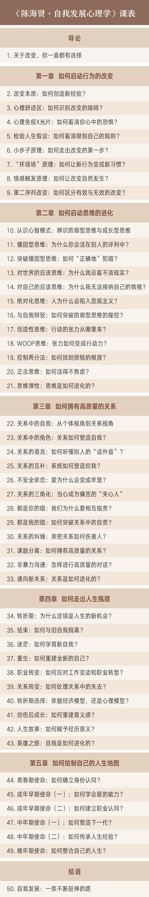

发刊词丨实现人生突破的系统方法
你思考过这样一个问题吗：如何拥有一个更好的人生？
我知道，用这样一个问题开始一门课，会让你觉得有点“心灵鸡汤”。但其实，这个问题是我仔细想过的。
- 什么才是更好的人生？我们的人生发展是有方向的吗？
- 我们能有效管理自己的成长吗？
- 如果可以，我们又该如何去实现一次次的人生突破，向着那个理想的方向前进呢？
要破解这些成长谜题，心理学能为我们提供很多有用的线索。
你好，我是陈海贤。
欢迎来到《自我发展心理学》。
我将用50讲的时间，系统回答上面这一系列问题。我希望这门课提供的思维方法和行动工具，能够帮助你迈开改变的步伐，突破或大或小的人生困境，创造一个让自己更满意的人生。
这门课是怎么来的呢？
你可能会觉得“自我发展心理学”这个说法很新鲜。没错，因为这是我们从真实生活中提炼出的新课题。
半年多前，在得到公司的会议室，罗振宇和脱不花问了我一个问题。他们说：
罗振宇问我：
说实话，这个问题让我着迷。
首先，因为它有挑战。
现有的、成熟的心理学理论体系，没有一个让我拿来就能解决这些问题的。这意味着，我要在众多理论和我自己案例的基础上，整合出一个新的体系。
最重要的是，这也是我一直关心，也很想讲的课题。
我是浙江大学的应用心理学博士，毕业后已经做了12年的专业心理咨询，接待了6000多位来访者。我通过社交平台和图书出版，拥有了100多万读者。
无论是和来访者的深度沟通，还是和读者各种形式的互动，我都深深地感觉到：其实每个人都在关心自我发展。
如果一个人的发展受限制了，他就会遇到很多的纠结和痛苦。
所以，我非常渴望有机会，有这样一个平台，能在这里把我所了解的知识和经验都讲给你听。
今天，这门课终于上线了。
这是一门关于改变的课。
说到改变，我们都很熟悉。比如：想减肥、想锻炼、想早睡早起、想读书、想换工作、想表白、想结束一段关系……
我曾经开玩笑说：一年365天，我们可能有364天都是在想着怎么改变的。但真实的改变却很难发生，即使发生了，也往往是三分钟热度，半途而废。
为什么改变就这么难呢？
我们经常想到的理由是：自己意志力不够坚定，或者行动力太弱；有时我们也会把不能改变的责任推卸给外在环境，觉得新工作太难找、同事太坏、家人不支持等等。
可是，我想告诉你的是：改变非常难，其实难在你心里。
你的心理系统就像一个鱼缸，而你就像鱼缸里的那条鱼，你在里面游看起来很自由，其实，你是被限制住了。
人生突破的本质是心理系统的更新。在这门课中，我最重要的任务是带领你检查你的心理系统，启动自我发展的进程。
这门课分为五章：
第一章，我将从行为出发，告诉你如何养成一个好习惯。
怎样走出心理舒适区，迈开改变的第一步。
第二章，我将带你了解你的思维系统，告诉你如何让心智变得更成熟。
我要带你看看你的大脑是不是有很多的防御性思维，并把成长型思维的工具介绍给你。
第三章，我会带你一起来拆解身边复杂的人际关系，告诉你如何突破爱恨情仇的迷局。
不健康的关系是如何限制的你？而拥有高质量的关系，你又需要成为一个什么样的人？
第四章，我们将穿越人生的重大转折期，告诉你如何走过人生的艰难时刻。
职业转换、亲人离去、情感变故、遭受创伤……这些我们人生经常会遇到的坎，如何塑造了你的心理结构？你又该如何去对付它们？
第五章，我将从整个人生的角度来告诉你，如何绘制自己的人生地图。
人生的不同阶段都有它自己的使命，而理解这一个使命，这一不同阶段的课题，能够提示我们，该从哪里突破。
那么，听完这门课，你将收获什么呢？
首先，你会得到一套改变与发展的实用工具。
在这门课程中，我会把咨询中反复使用过的、最有效的工具告诉你。教你如何辨析心理系统中的bug，如何重建一个从容的自我。
其次，我会为你提供这些工具的使用说明书。
12年的咨询生涯，让我见识了很多的故事，我会把其中最有启发性的故事讲给你听，也包括我自己的故事。
心理学的概念和工具往往容易比较抽象，我们也很容易把它们变成和我们无关的、很远的知识。
而我能够帮助你把这些工具和你真实的生活结合起来，让它真正变成你的东西。我要讲的，就是你的事。
最后，也是我最希望能够给你的，是内省的习惯和思考线索。
这门课并不是一个包治百病的医疗工具箱，而是你深刻透视自己内心的窗口。
改变的前提是理解自己，而理解自己就需要你有内省的能力。自我很复杂，没有系统的心理学方法，你很难真正读懂自己。
所以这门课，我希望你能理解自己的思考方法，并形成内省的习惯。请记住，内省，才是我们自我发展真正的动力。
俄罗斯著名文学家陀思妥耶夫斯基曾经说过一句话：
在我看来，正是那些不敢讲给自己听的话，才真正塑造了你自己。而我们这门课，就是要让你听到那些你不能讲给自己听的话。
我希望，这门课能成为你自我发展路上的伴侣。同时我也希望，有一天你不再需要我，因为那时候，你已经独自开拓到了很远的地方。
欢迎加入《自我发展心理学》，也希望你能把这门课分享给你最亲密的爱人和朋友。
让我们一起来实现人生的突破。
